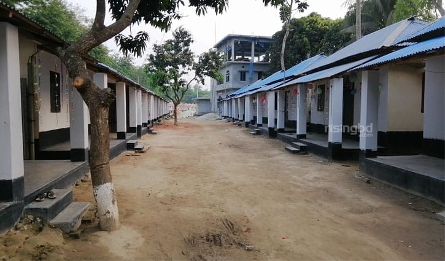
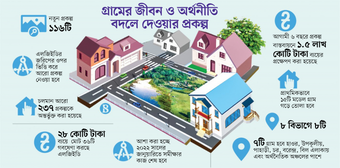

বর্তমান সরকারের দৃঢ় নেতৃত্ব ও সুবিন্যস্ত পরিকল্পনামাফিক বাংলাদেশ এখন একসময়ের তলাবিহীন ঝুড়িখ্যাত অনুন্নত দেশ থেকে উন্নয়নশীল দেশের কাতারে পৌঁছে গেছে। গ্রাম প্রধান বাংলাদেশের দারিদ্র্যপীড়িত গ্রামগুলোর দৃশ্যপটে আমূল পরিবর্তন এসেছে। গ্রামকে কেন্দ্র করে সরকার ব্যাপক উন্নয়ন কার্যক্রম পরিচালনা করছে। উন্নয়নের মহাসড়কে এখন বাংলাদেশ।আওয়ামী লীগের নির্বাচনি ইশতেহার ২০১৮-তে গুরুত্বপূর্ণ অঙ্গীকারগুলোর মধ্যে প্রধান মূলনীতি ছিল ‘আমার গ্রাম, আমার শহর’। অর্থাৎ প্রতিটি গ্রামে আধুনিক নগরসুবিধা সম্প্রসারণ করা হবে। এ ছাড়া বর্তমান আওয়ামী লীগ সরকার আরও প্রতিশ্রুতি দিয়েছিল, ‘আমরা নির্বাচিত হয়ে সরকার গঠন করলে প্রতিটি গ্রামকে শহরে উন্নীত করার কর্মসূচি গ্রহণ ও বাস্তবায়ন করব। শহরের সুবিধা গ্রামে পৌঁছে দেব। আগামী পাঁচ বছরে দেশের প্রতিটি ঘরে বিদ্যুৎ পৌঁছে যাবে। পাকা সড়কের মাধ্যমে সব গ্রামকে জেলা-উপজেলা শহরের সঙ্গে সংযুক্ত করা হবে। ছেলেমেয়েদের উন্নত পরিবেশে লেখাপড়ার সুযোগ তৈরি করা হবে। সুপেয় পানি এবং উন্নত মানের পয়ঃনিষ্কাশন ব্যবস্থা নিশ্চিত করা হবে। সুস্থ বিনোদন এবং খেলাধুলার জন্য অবকাঠামো গড়ে তোলা হবে। কর্মসংস্থানের জন্য জেলা-উপজেলায় কলকারখানা গড়ে তোলা হবে। ইন্টারনেট, তথ্যপ্রযুক্তি সর্বত্র পৌঁছে যাবে।’
নিঃসন্দেহে এটি ইতিবাচক ও যুগোপযোগী অঙ্গীকার। বর্তমান সরকারের সবচেয়ে ইতিবাচক দিক হলো উন্নয়নচিন্তার মধ্যে গ্রামকে স্থান দেওয়া। শহুরে নাগরিক জীবনের আধুনিক সব সুযোগ-সুবিধা এবং নাগরিক অধিকার গ্রামেও নিশ্চিত করা। গ্রাম শহর হবেÑ এটি শুনে অনেক সচেতন নাগরিকই শহরের নেতিবাচক সমস্যা ও পরিবেশ দূষণের কথা চিন্তা করে দুশ্চিন্তাগ্রস্ত হয়ে পড়েন। কিন্তু আদতে বিষয়টি হলোÑ ‘গ্রাম শহর হবে’ বলতে বুঝানো হয়েছে আমাদের পিছিয়ে পড়া গ্রামগুলো হবে এক একটি আধুনিক সুযোগ-সুবিধা সম্পন্ন গ্রাম।
একটি উদাহরণ দিলে বিষয়টি সবার কাছে আরও সহজ হয়ে যাবে। করোনা মহামারির এই সময়ে আমার হয়তোবা একটি বিষয় লক্ষ করে থাকব; সেটি হলো অনলাইন ক্লাস। গ্রামের ছেলেমেয়েরা কিন্তু আগে তেমন অনলাইন ক্লাসের সঙ্গে পরিচিত ছিল না, করোনা আসার পরেই তারা এর সঙ্গে পরিচিত হতে পেরেছে। বর্তমানে গ্রামের ছেলেমেয়েরা যারা বিশ^বিদ্যালয় পড়ুয়া ছাত্রছাত্রী আছে, তারা অনলাইনে ক্লাস করছে।
আগে দেশের প্রধান প্রধান শহরে ওয়াইফাই (ওয়্যারলেস সুবিধাসম্পন্ন ইন্টারনেট সংযোগ) সুবিধা ছিল। বর্তমানে করোনার কারণে গ্রামে এই সুবিধা পৌঁছে গেছে। এর ফলে অনেকেই গ্রামে বসে ফ্রিল্যান্সার হচ্ছেন, অনলাইনে ক্লাস করছেন, ব্যবসা-বাণিজ্য পরিচালনা করছেন। করোনার কারণে কিন্তু গ্রামের স্কুল কলেজে শিক্ষকেরাও অনলাইনে ক্লাস নিচ্ছেন। এ থেকে বোঝা যাচ্ছে করোনা একদিকে আমাদের ক্ষতি করেছে অন্যদিকে আমাদেরকে প্রযুক্তি বিষয়ে অভিজ্ঞ করে তুলেছে। এটি সরকারের অঙ্গীকার বাস্তবায়নের কাজকে আরও এক ধাপ এগিয়ে নিয়ে যাচ্ছে। বর্তমান সরকার দেশের প্রত্যেকটি জেলা উপজেলাসহ ইউনিয়ন পরিষদ পর্যায় পর্যন্ত ডিজিটাল তথা আধুনিক করার মহাপরিকল্পনা হাতে নিয়েছে।
ডাক বিভাগ ও ই-ক্যাবের মধ্যে চুক্তির মাধ্যমে ডিজিটাল কমার্স বুথ নামে নতুন সেবা চালু হয়েছে বাংলাদেশ ডাক বিভাগে। ১৬ মার্চ ঢাকা জিপিওতে এক চুক্তি স্বাক্ষরের মাধ্যমে দেশের ই-কমার্স খাতে যুক্ত হয়েছে নতুন অধ্যায়। ই-ক্যাবের (ই-কমার্স অ্যাসোসিয়েশন অব বাংলাদেশ) পক্ষ থেকে সংগঠনের ভাইস প্রেসিডেন্ট সাহাব উদ্দীন শিপন ও বাংলাদেশ ডাক বিভাগের পক্ষে পরিচালক ডাক এসএম হারুনুর রশিদ এই চুক্তিতে স্বাক্ষর করেন। দেশজুড়ে ডাক বিভাগের বিদ্যমান অবকাঠামো ব্যবহারের মাধ্যমে প্রান্তিক পর্যায়ে ই-বাণিজ্য সেবা পৌঁছে দিতে এই ‘ডিজিটাল কমার্স বুথ’ কর্নার চালু করতে যাচ্ছে সরকার। এই সেবা স্বয়ংক্রিয় ট্র্যাকিং সিস্টেমের মাধ্যমে ডিজিটাল পণ্যের দ্রুত বিলি সুবিধা ছাড়াও বিলির সেবা পরবর্তী ইলেকট্রনিক মানি ট্রান্সফার সার্ভিস (ইএমটিএস), ওয়্যারহাউস এবং গ্রাহক তথ্যসেবা পাওয়া যাবে।
বর্তমানে গ্রামে টিনের কিংবা কাঁচা বাড়ি ভেঙে পাকা বাড়ি গড়ার হিড়িক পড়েছে, ঘরে ঘরে বিদ্যুৎ সুবিধা পৌঁছে গেছে। যার ফলে লেখাপড়ার জন্য গ্রামের ছেলেমেয়েরা বিদ্যুৎচালিত বাতি, ফ্যান ব্যবহারের সুবিধা পাচ্ছে, ধীরে ধীরে সব রাস্তা-ঘাট পাকা হয়ে যাচ্ছে। রাস্তার পাশে খাল খনন করা হচ্ছে, যার ফলে বৃষ্টির পানি জমাট না বেঁধে খালে গিয়ে জমা হচ্ছে। যেসব খাল-বিলের গভীরতা কম সেগুলো আবারও খননের কাজ চলছে। গ্রামে গ্রামে দেখা যাচ্ছে স্বেচ্ছাসেবক সংগঠন, যা পূর্বে কমই দেখা যেত। তারা তাদের নিজ গ্রামকে উন্নত করার জন্য গরিবদের মধ্যে ত্রাণ বিতরণ, খেলার আয়োজন, ভাঙা রাস্তা থাকলে মেরামত করা, নিরক্ষর মানুষকে শিক্ষিত করে তোলা ইত্যাদি কাজ করে যাচ্ছে।
সরকারের উদ্যোগকে সাধুবাদ জানাতেই হবে, কেননা তারা দেশের প্রায় অনেক প্রাইমারি স্কুল, হাই স্কুল, কলেজের জন্য নতুন ভবন তৈরি করছেন, যার ছোঁয়া গ্রামের স্কুল-কলেজগুলোতেও লেগেছে। স্কুল-কলেজগুলোতে কম্পিউটার ল্যাব গড়ে তোলা হচ্ছে যার ফলে শিক্ষার্থীরা কম্পিউটার সম্পর্কে ব্যবহারিক জ্ঞান পাচ্ছে। গ্রামে বসে তারা বিভিন্ন ধরনের আধুনিক তথ্যপ্রযুক্তির জ্ঞান পাচ্ছে এবং তা যথাযথ কাজে লাগাতে পারছে। গ্রামের কৃষকেরা পূর্বের তুলনায় এখন অনেক উন্নত হয়েছে, তারা বিভিন্ন দিক থেকে শিক্ষাগ্রহণ করে তা নিজ চাষাবাদে প্রয়োগ করছে, ফলে জমির ফসল উৎপাদন বৃদ্ধি পাচ্ছে। কৃষকের জমির পানির ঘাটতি পূরণ করার সমাধানে চলছে গভীর নলকূপ বসানোর কাজ। এনজিও কর্মীরা উন্নত ফসল সম্পর্কে ধারণা দিচ্ছে, কীভাবে চাষ করলে ফলন বেশি হবে।
গ্রামকে শহরে রূপান্তর করার আরেকটা মাধ্যম হচ্ছে, ‘একটি বাড়ি একটি খামার’ প্রকল্প বাস্তবায়ন। এটি বাংলাদেশ সরকারের গৃহীত সমবায় সমিতিভিত্তিক একটি দীর্ঘমেয়াদি সামাজিক পরিকল্পনা। এই প্রকল্পটির আওতায় গ্রামের দরিদ্র পরিবারগুলোকে অর্থনৈতিক ইউনিট হিসেবে তৈরি করার মাধ্যমে গ্রামীণ জনগোষ্ঠীর আর্থ-সামাজিক অবস্থার উন্নয়ন ঘটানোর উদ্যোগ নেওয়া হয়েছে। ‘একটি বাড়ি একটি খামার’ প্রকল্পে প্রাথমিক জরিপের ভিত্তিতে গ্রামের দরিদ্র মানুষের জন্য সমবায়ভিত্তিক ‘গ্রাম উন্নয়ন সংগঠন’ সৃষ্টি করে সদস্যদের দক্ষতা বৃদ্ধিমূলক বিভিন্ন প্রশিক্ষণ, ঋণ, অনুদান ও কারিগরি সহায়তা দেওয়া হয় এবং সেই সঙ্গে দরিদ্রদের মধ্যে দুগ্ধবতী গাভি, মৎস্য, হাঁস-মুরগি ও ফসলের বীজ বিতরণ করা হয়।
এ ছাড়া গ্রামের মানুষের কাছে আধুনিক চিকিৎসাসেবা পৌঁছে দেওয়ার জন্য বর্তমান সরকার ‘কমিউনিটি ক্লিনিক’ তৈরি করছেন। এর ফলে আধুনিক স্বাস্থ্যসেবা গ্রামীণ মানুষের দোরগোড়ায় পৌঁছে গেছে। সরকারের বিস্তৃত কর্মযজ্ঞ দেখে বলা যায়, গ্রাম শহরে পরিণত হতে, আর বেশি দেরি নেই। এখন ঘরে বসেই টেলিমেডিসিন সুবিধা পাওয়া যাচ্ছে, যার ফলে গ্রামে বসে হটলাইনে ফোন করে যে কেউ ডাক্তারের পরামর্শ নিতে পারছে। গ্রামের মানুষকে সচেতন করার জন্য বিভিন্ন স্বেচ্ছাসেবক সংগঠন গড়ে তোলা হচ্ছে গ্রামে গ্রামে। বিদ্যুৎ বিল দেওয়ার জন্য আর শহরে যেতে হচ্ছে না, ঘরে বসেই গ্রামের মানুষ অনলাইন মোবাইল ব্যাংকিংয়ের মাধ্যমে বিদ্যুৎ বিল পরিশোধ করছে। গ্রামের যারা বৃদ্ধ মানুষ রয়েছে, তাদের ভাতা দিচ্ছে সরকার। আর এই ভাতার অর্থ উত্তোলনের জন্য শহরেও যেতে হচ্ছে না, মোবাইল ব্যাংকিংয়ের মাধ্যমে অর্থ প্রদান করা হচ্ছে।
গ্রামের মানুষগুলো সবাই শিক্ষিত হোক। তবে সবাই শিক্ষিত হয়ে তারা যেন শহরে পালিয়ে না যায়। জীবিকার তাগিদে দিনে শহরে যাক বা চাকরি করতে যাক, রাতে যেন নিজ গাঁয়ে ফিরে এসে ঘুমানোর সুযোগ পায়Ñ এটাই আধুনিক গ্রামের ধারণা। গ্রামগুলো স্মার্ট ভিলেজে পরিণত হতে যত ধরনের ডিজিটাল প্রযুক্তি প্রয়োজন সেগুলোর ব্যবহার করা হচ্ছে বর্তমানে। গ্রামকে শহর বানানোর জন্য গ্রামে সব ধরনের নাগরিক সুবিধার ব্যবস্থা করা হচ্ছে। বড় বড় শহরের সঙ্গে সহজে এবং দ্রুততম সময়ে রেল যোগাযোগ, স্বল্পমূল্যে বিদ্যুৎ, ফ্রি ইন্টারনেট, ভালো ডাক্তারসহ উন্নত চিকিৎসাসেবা, বিশুদ্ধ পানি, শিক্ষালয় ও মেধাবী শিক্ষক, দারিদ্র্য, মাদক ও সন্ত্রাস নির্মূল এবং কুটির শিল্প ও
কৃষিতে উৎপাদিত পণ্য নির্ধারিত মূল্যে বিক্রয়ের নিশ্চয়তা দিতে পারলেই প্রতিটি গ্রামের ঐতিহ্য ফিরে আসবে। গ্রামের গরিব মানুষ আর পেটের দায়ে শহরে স্থানান্তরিত হবে না। এর বাস্তবায়নের লক্ষ্যেই এগিয়ে যাচ্ছে সরকার। তাই ধীরে ধীরে সব প্রকল্প বাস্তবায়ন হলে আমাদের গ্রামগুলো একটি ‘আধুনিক গ্রাম’ বা শহুরে সুবিধাসম্পন্ন আধুনিক গ্রামে পরিণত হবে।